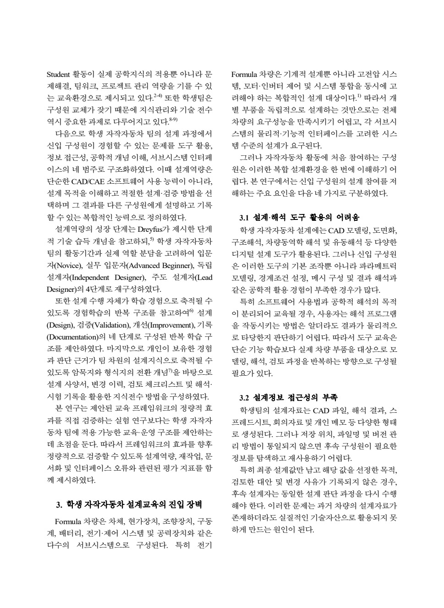
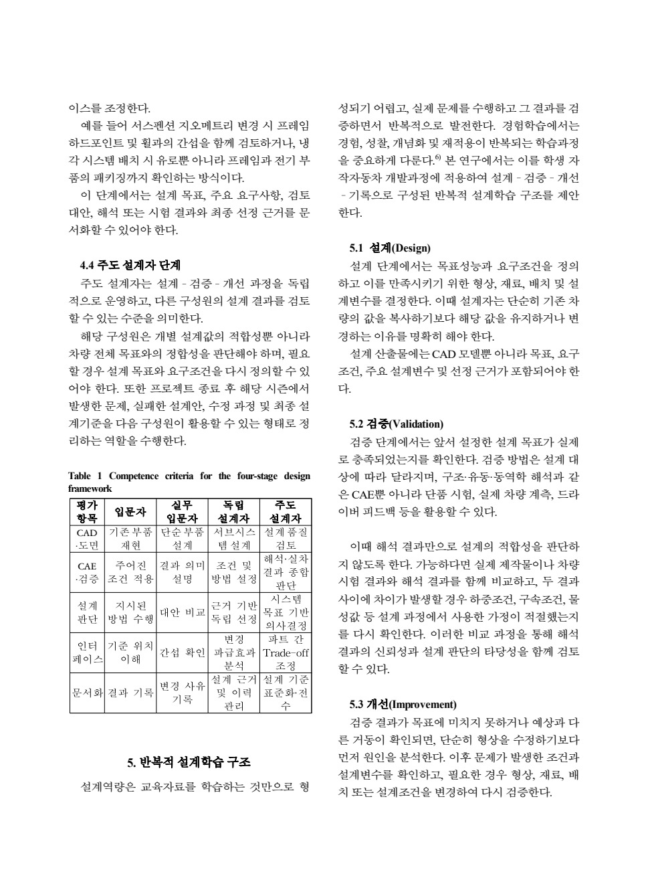
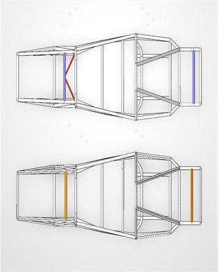
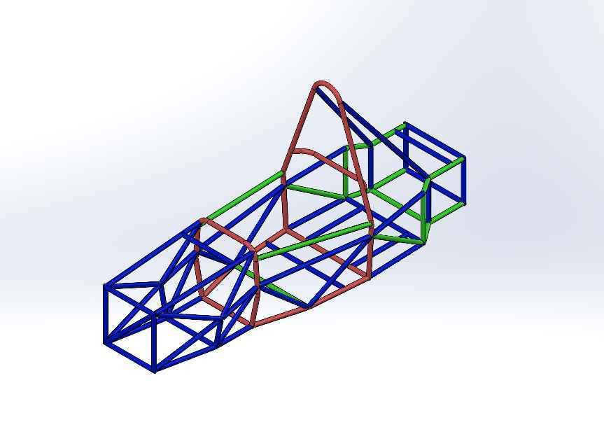
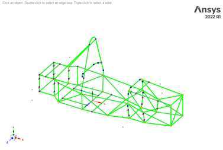
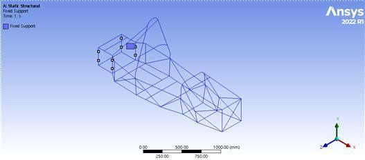
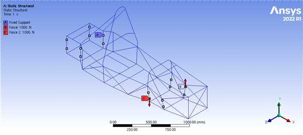
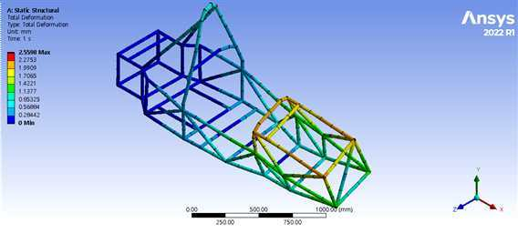
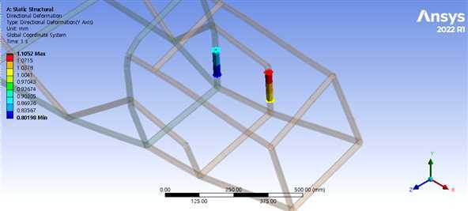

여섯 기술팀을 연결하는 운영
개인 설계와 팀 운영을 함께 맡기
2025~2026 시즌 A-FA 팀장과 서스펜션 담당을 병행했습니다. 여섯 기술팀의 업무가 하나의 차량에서 만나는 구조에서, 제 부품의 완성도와 팀이 함께 판단할 수 있는 기준을 모두 살펴야 했습니다. 각 파트의 상세 설계를 혼자 수행한 것이 아니라 설계·제작 담당과 조율 역할을 함께 맡았습니다.
결과뿐 아니라 판단 근거를 전달하기
도면만 남으면 다음 담당자가 변경 이유와 조건을 다시 찾아야 합니다. 섀시 설계보고서와 학습공동체 스터디를 통해 프레임 설계, 구조해석, 위상최적화의 조건과 판단 과정을 기록했습니다. 공식 스터디 활동은 5회, 20시간 30분입니다.
팀장 역할의 구체적인 접점
내부의 기술 자료를 외부 시험·제작 문의에 사용할 수 있도록 정리하고, 후원사에는 개발 과정과 시즌 결과를 설명했습니다. 차기 팀장과 후속 담당자를 소개해 연락 관계와 자료가 이어지도록 했습니다. 내부 기록과 외부 협의를 별개의 행정 작업으로 보지 않고 개발의 흐름 안에서 다루었습니다.
개인과 팀 결과의 구분
계측·공력·배터리의 세부 작업에는 각 담당자의 기여가 있습니다. 공동 보고서의 모든 내용을 저의 독자 설계·해석으로 쓰지 않습니다. 팀장은 역할과 기준을 연결하고 제출물과 일정의 맥락을 정리하는 사람이라는 관점에서 이 경험을 설명합니다.
보고서·스터디·지식관리 결과물

설계 문서의 구조
설계사양, 변경 이유, 계산·해석 조건, 제작 절차와 확인할 항목을 서로 연결하는 기록을 중요하게 보았습니다. 섀시 보고서와 팀 합본은 차량의 판단 과정을 다음 시즌이 읽을 수 있게 남기는 산출물입니다. 파일의 분량이 크다는 사실보다 필요한 근거를 찾아 연결할 수 있는 구조가 중요했습니다.
스터디에서 다룬 내용
프레임 설계와 차량 구조 해석, 위상최적화를 주제로 학습 활동을 운영했습니다. 개별 도구 사용법에만 머무르지 않고 실제 설계의 조건과 결과를 설명할 수 있도록 기술 자료를 정리했습니다. 참여 횟수와 시간은 활동 기록이며 팀 전체의 학습 성과를 측정한 효과 지표로 사용하지 않습니다.
연구로 확장한 지식관리 제안
남선우와 공동으로 입문자부터 주도 설계자까지의 성장 단계, 설계·검증·개선·기록의 흐름을 정리했습니다. 설계사양서, 변경이력, 체크리스트와 해석·시험기록을 연결하는 체계입니다. 아래 실제 원고 페이지에는 성장 단계별 기준과 과정의 설명이 담겨 있습니다.
이미지의 역할
이 사례에서 보여 주는 결과물은 운영 원고와 기술 문서입니다. 차량 CAD는 팀 전체가 공유하는 설계 맥락이며, 지식관리 원고는 제안한 체계의 실물 문서입니다. 회의·교육 효과를 증명하는 실측 그래프나 실제 도입 완료 화면으로 소개하지 않습니다.

설계보고서 심층 기록: 프레임: 기존 구조를 유지하면서 변경된 하중 경로에 대응하기
차량의 기준 구조를 설계하는 문제
프레임을 단순히 모든 부품을 담는 틀로 보지 않고, 현가 하드포인트의 위치를 유지하며 구동계·배터리·인버터·냉각계·공력 부품을 연결하는 기준 구조로 다뤘습니다. 현가 설계에서 좋은 좌표를 얻더라도 하드포인트를 지지하는 파이프가 변형되거나 제작 위치가 달라지면 실제 바퀴의 자세와 하중 전달은 설계와 달라집니다. 따라서 전역 강성, 국부 체결부, 제작 오차, 정비 접근성을 같은 설계 문제로 묶었습니다.
AEF-26은 AEF-25의 Space Frame 기본 구조를 활용한 개선형 설계입니다. 전년도 구조에는 실제 제작·조립·검차 과정에서 얻은 경험과 기존 지그가 있었습니다. 전체 프레임을 새로 설계하는 선택은 새로운 패키징 자유도를 주지만, 지그 재제작·용접 순서 재정의·조립 오차·제작 일정의 부담도 함께 만듭니다. 이번 설계에서는 바꿀 필요가 있는 영역과 유지할 수 있는 영역을 구분하는 것이 중요했습니다.
유지한 것과 바꾼 것
전후륜 서스펜션 하드포인트가 체결되는 파이프 위치를 변경하고, 전륜 현가 마운트 주변의 보강대 일부 삭제를 반영했습니다. EMRAX 228 적용과 전장·냉각 부품 배치 변경, Full Aero Package를 위한 마운트 조건도 패키징 검토의 입력이 되었습니다. 전체 실루엣이 유사하더라도 하드포인트의 위치와 보강 부재가 달라졌기 때문에, 전년도 비틀림 강성 수치를 새로운 모델의 검증 없이 그대로 사용하는 것은 적절하지 않았습니다.
| 설계 항목 | 판단 기준 | 설계에서 연결한 문제 |
|---|---|---|
| 전체 비틀림 강성 | AEF-25 해석 수준 약 2170 N·m/deg 유지 | 현가 입력에 대한 프레임 전체의 회전 변형 |
| 하드포인트 유지성 | 체결 파이프 위치와 주변 하중 경로 검토 | 설계한 현가 기하의 실제 구현 |
| 패키징 | 모터·인버터·배터리·배관·배선 경로 | 설치 공간과 다른 파트의 인터페이스 |
| 정비성 | 주요 부품 탈거와 점검 접근 공간 | 조립 후 서비스 작업 가능성 |
| 제작 신뢰성 | 기존 지그·제작 경험 활용 | 제작 일정과 위치 오차 관리 |
설계보고서의 기존 목표 약 2200 N·m/deg와 전년도 해석 수준 약 2170 N·m/deg는 구분했습니다. AEF-26의 계산 결과를 2200 목표 초과 성과로 표현하지 않습니다. 기존 수준을 유지하는 개선형 설계라는 판단과, 원래 목표에 소폭 미달한다는 사실을 함께 기록하는 편이 설계 의도를 정확히 설명합니다.
재료와 단면을 모델에 옮기기
보고서의 프레임 재료는 STKM-11A 계열 강관입니다. 프레임 해석에서는 탄성계수 200,000 MPa, 포아송비 0.30, 밀도 7.85×10⁻⁶ kg/mm³를 적용했습니다. 강성은 선형 탄성 구간의 변형으로 계산하므로 탄성계수와 파이프 단면이 중요한 입력입니다. 항복강도나 인장강도가 높다는 사실만으로 비틀림 강성이 높아지는 것으로 해석하지 않았습니다.
제출보고서에는 파이프 두께를 적색 1.8t, 청색 1.65t, 녹색 1.25t로 구분한 CAD가 있습니다. 모든 부재를 동일한 실선처럼 취급하지 않고 실제 적용할 단면을 Beam에 지정하는 과정의 근거입니다. 다만 이 그림은 설계 단면을 표시한 CAD이며, 제작된 모든 파이프의 실측 두께 검사표는 아닙니다.
개인 기여와 팀 인터페이스
프레임·현가·벨크랭크·지그·제작·정적해석은 제가 직접 참여한 기술 영역입니다. 팀장으로서 구동계와 전장, 냉각, 공력 담당자와 장착 위치·간섭·제작 일정을 맞추고 보고서의 관련 근거를 연결했습니다. 팀 합본의 모터 전기제어, 배터리 전기설계, 공력 해석, 계측 코드 전체까지 개인이 수행한 것으로 확장하지 않습니다. 해당 영역은 프레임이 수용해야 하는 팀 설계 조건이자 협업 인터페이스로 다룹니다.
이 사례가 보여주는 작업은 완전히 새로운 프레임을 제안하는 것보다, 기존 구조의 장점을 남기면서 변경점이 강성과 제작에 미치는 영향을 다시 확인하는 설계 판단입니다. 전체 강성 해석, 체결부 상세 검토, 실측 계획이 서로 다른 검증 단계라는 점도 보고서에 남겼습니다.
근거: 개인 섀시 설계보고서 1~3, 5~6, 8쪽; A-FA 팀 제출 설계보고서 13~17, 24쪽.



설계보고서 심층 기록: 프레임: 비틀림 강성 계산에서 실차 검증 계획까지
중심선 기반 Beam 모델을 선택한 이유
ANSYS Workbench 2022 R1의 Static Structural 환경에서 SpaceClaim 중심선 기반 Line Body를 구성했습니다. 목적은 프레임 전체의 비틀림 강성을 효율적으로 비교하는 것이므로, 모든 튜브를 3차원 솔리드로 상세 모델링하기보다 실제 파이프 단면을 가진 Beam 모델을 사용했습니다. 부재 연결은 Beam Connect를 통해 동일 노드로 구성하고 Mesh 생성 후 연결 상태를 확인하는 방식입니다.
이 모델의 평가 대상은 프레임 자체입니다. 위시본, 업라이트, 타이로드의 탄성 변형이나 실제 베어링 유격을 함께 계산한 전체 차량 모델은 아닙니다. 용접 비드의 형상, 용접 열영향부, 브라켓의 국부 응력 집중도 이 전역 모델의 직접 평가 범위에 포함하지 않았습니다. 빠르게 비교할 수 있는 모델을 택한 대신, 그 모델로 답할 수 있는 질문을 제한했습니다.
경계조건을 정의하고 토크로 환산하기
후륜 좌우 인보드 하드포인트에 구속 조건을 설정하고, 전륜 좌우 인보드 하드포인트에는 반대 방향의 수직 하중을 각각 1000 N 적용했습니다. 프레임 후방의 모든 부재를 고정하면 실제보다 과도한 구속으로 강성이 크게 계산될 수 있으므로, 현가 하중이 전달되는 장착 위치를 기준으로 조건을 정했습니다.
보고서의 하중 작용선 간 거리는 450.21 mm입니다. 커플의 토크는 한쪽 하중 F와 두 작용선의 간격 b의 곱으로 계산합니다.
T = F × b = 1000 N × 0.45021 m = 450.21 N·m
같은 계산을 차량 중심선에서 한쪽 작용선까지 거리 l로 쓸 때는 T = 2Fl이 됩니다. b=2l이므로 두 식은 동일하며, 하중 2개라는 이유로 작용선 간 거리 b를 사용하는 식에 다시 2를 곱하지 않습니다.
최대 변위 대신 좌우 평균 방향변위 차이를 사용하기
ANSYS Directional Deformation에서 보고서가 사용한 좌측 전륜 하드포인트 평균 Y변위는 +0.81337 mm, 우측 평균은 -0.81688 mm입니다. 두 값의 차이는 1.63025 mm입니다. 이 차이를 하중점 간 거리로 나누어 비틀림각을 구했습니다.
θ = atan(1.63025 / 450.21) × 180 / π ≈ 0.20747 deg
Kₜ = T / θ = 450.21 / 0.20747 ≈ 2170 N·m/deg
| 항목 | 보고서 값 | 의미 |
|---|---|---|
| 한쪽 하중 | 1000 N | 좌우 반대 방향 커플의 구성 하중 |
| 작용선 간격 | 450.21 mm | 토크와 비틀림각 산정의 기준 거리 |
| 좌우 변위 차이 | 1.63025 mm | 병진 성분을 구분하기 위한 상대 변위 |
| 비틀림각 | 0.20747 deg | mm와 deg 단위를 구분한 계산 결과 |
| 비틀림 강성 | 약 2170 N·m/deg | 해당 경계조건의 선형 정적 해석값 |
결과는 전년도 해석 수준과 동등한 약 2170 N·m/deg입니다. 기존 목표 약 2200 N·m/deg에는 소폭 미달합니다. 후륜 고정 조건, 입력 위치, 부재 단면과 연결 가정이 다른 해석이나 실측 자료와 수치만 직접 비교하지 않습니다.
보고서에 남긴 실측 절차
설계보고서 제출 시점에는 프레임 비틀림 강성 실측이 완료되지 않았습니다. 따라서 결과물은 해석 모델과 계산, 그리고 실측 계획입니다. 실측 계획에서는 후방 고정 지그·전방 하중 입력 지그·변위 측정 지그를 구분했습니다. 변위 센서를 프레임과 함께 움직이는 부위에 고정하면 실제 변형을 과소평가할 수 있으므로, 정반 또는 지면에 독립된 기준을 두도록 했습니다.
계획한 입력 단계는 0→500→1000→1500 N이며, 각 단계에서 좌우 수직 변위를 기록한 뒤 하중을 제거하면서 복원을 확인합니다. 최소 3회 이상 반복하여 평균을 비교하고, 가능하면 후방 고정점의 변위도 함께 측정해 지그 자체의 변형을 확인하는 방식입니다. 이는 실제 수행 완료 기록이 아니라 보고서의 검증 계획입니다.
해석과 시험을 비교할 때는 입력 위치·방향·좌우 거리·후방 구속·센서 위치를 맞춰야 합니다. 차이가 생기면 용접부, 체결 유격, 제작 오차, 지그 변형, 경계조건 차이를 원인 후보로 분해합니다. 이후 하드포인트와 모터·배터리·윙 마운트의 국부 해석을 추가하는 것이 전역 Beam 결과를 보완하는 순서입니다.
근거: 개인 섀시 설계보고서 5~6, 8, 10~11, 13~14, 17~22쪽; A-FA 팀 제출 설계보고서 17~24쪽.




설계보고서 심층 기록: 설계보고서의 통합: 계산·제작·시험 상태를 연결한 기록
결과물과 판단 근거를 함께 남기기
이번 A-FA 경험에서 보고서는 완성된 부품을 설명하는 자료인 동시에, 다음 사람이 설계 판단을 다시 따라갈 수 있게 하는 인계 자료였습니다. 프레임의 하드포인트 변경이 강성 모델에 연결되고, 휠 트래블과 MR이 스프링·댐퍼 사용량에 연결되며, 벨크랭크 하중이 푸시로드 좌굴 계산으로 이어집니다. 계산식의 수치만 모으기보다 입력·정의·가정·결과·남은 확인사항을 같은 흐름으로 정리했습니다.
팀 제출 합본은 313쪽이며, 개인 섀시 원고는 236쪽의 상세 판본입니다. 합본 표지의 팀장·제출 책임자라는 사실을 모든 파트의 단독 저작·해석·제작자로 확장하지 않습니다. 제 개인 경험은 프레임·현가·벨크랭크·제작·정적해석 및 팀 기술 문서 통합을 중심으로 설명하고, 배터리 전기설계·공력·계측 플랫폼 등 다른 담당자의 결과는 팀 인터페이스와 협업 맥락으로 표시합니다.
한 표에서 구분한 검증 수준
| 근거의 종류 | 이 포트폴리오의 실제 예 | 그 근거로 말할 수 있는 범위 |
|---|---|---|
| 설계 목표 | MR 0.70/0.80, 정적 롤센터 40/70 mm | 의도한 값과 선정 이유 |
| 계산·모델 | Beam 강성 약 2170 N·m/deg, Euler SF 4.26/10.19 | 가정한 모델 조건의 결과 |
| 해석 그림 | 벨크랭크 응력·안전율 분포 | 해당 정적 등가 하중의 응력 경향 |
| 실물 사진 | 제작 벨크랭크 25/28 g 저울 사진 | 실제 부품과 당시 표시 질량 |
| 외부 시험 데이터 | 대표 댐퍼 Dyno 그래프 | 그 시료·시험 조건의 측정 특성 |
| 별도 주행 분석 | 7회 롤 시험 | 해당 세팅·세션에서 관찰한 변화 |
| 검증 계획 | 프레임 비틀림 강성 실측 절차 | 앞으로 비교해야 할 방법과 항목 |
이 구분은 내용을 줄이기 위한 것이 아니라 각 결과의 의미를 더 자세히 설명하기 위한 기준입니다. 예를 들어 벨크랭크 실측 25 g은 FEA의 타당성을 직접 증명하지 않고, 안전율 1.55는 실물의 피로수명을 측정한 결과가 아닙니다. 두 자료를 연결해 설계가 제작물로 이어졌다는 사실과 남은 구조 검증을 함께 보여줍니다.
판본을 연결할 때 발견한 확인 항목
개인 원고에는 그림 삽입 지시·편집 안내·미작성 제목도 남아 있습니다. 이를 실제 도판이나 완료된 실험으로 바꾸지 않고, 제출본의 실재 그림과 표를 우선 연결했습니다. 예를 들어 개인본의 공력 하중 고려 절은 제목만 남아 있지만 제출본 p40은 최종 다운포스 미확정으로 초기 스프링 계산에 직접 반영하지 않았다는 상태를 설명합니다. 후륜 토 변화도 개인본은 제작 전 재검토, 제출본은 제작 후 초기 세팅 관리 대상으로 서술 시점이 다릅니다.
다른 예는 벨크랭크 산정 하중과 FEA 입력 절의 소폭 차이, 프레임·푸시로드의 탄성계수 설정 차이, 초기 스프링안과 별도 롤 주행시험의 강성 조건 차입니다. 이런 항목을 임의로 하나의 최종 수치로 합치지 않고, 원본을 다시 열어야 하는 연결점으로 남겼습니다. 후속 팀원이 같은 모델을 수정하거나 테스트를 재현할 때 필요한 정보입니다.
팀 운영과 기술 문서화의 연결
팀장으로서 여섯 기술 파트의 보고·스터디·인계를 관리하면서, 결과만 전달되는 상황보다 설계 이유와 후속 확인사항을 함께 전달할 필요를 느꼈습니다. 문서에서는 무엇을 유지했고 무엇을 변경했는지, 어떤 조건에서 계산했는지, 제작품으로 무엇을 확인했는지, 어떤 시험은 아직 남았는지를 추적할 수 있게 하는 데 초점을 맞췄습니다.
프레임 실측 계획에는 독립된 변위 기준과 반복 측정을, 현가 제작 절차에는 지그 고정과 가접 후 치수 확인을, 세팅 계획에는 정적 얼라인먼트→저속 기능 확인→기본 주행→후속 점검의 순서를 담았습니다. 이는 설계 문서를 다음 작업의 실행 자료로 만드는 방식입니다. 다만 문서화로 생산성이나 인수인계 시간이 몇 퍼센트 개선되었다는 전후 지표는 없습니다.
시즌 결과와 다음 검증의 정직한 연결
2026 FSK에서는 배터리 검차를 통과하지 못해 동적 경기·내구레이스 완료 성과를 주장할 수 없습니다. 보고서의 목표와 해석·제작 결과를 대회 완주나 전년도 대비 경기력 향상으로 치환하지 않습니다. 설계보고서 제출 시점에도 모든 목표가 실차로 최종 검증된 것은 아니었습니다.
그럼에도 실제 결과물은 남습니다. 프레임 모델과 계산, 현가 제원과 기구학 표, 보유 댐퍼 측정 데이터 분석, 벨크랭크의 제작 가능한 형상과 실물, 지그와 제작 절차, 부품 검수와 후속 시험 계획이 그것입니다. 내 포트폴리오에서는 성공한 수치뿐 아니라 설계 의사결정과 미완료 검증을 분리해 보여주는 기술 기록으로 제시합니다.
근거: 개인 섀시 설계보고서 1, 13, 17, 120~121, 159, 181, 187, 196~197, 207, 222~223, 225, 233~236쪽; A-FA 팀 제출 설계보고서 1, 20, 22, 24, 36, 38~40, 49, 53, 55, 57~58, 313쪽.


시즌 결과·인수인계·운영의 한계
성과와 한계를 함께 보고하기
시즌 보고는 잘된 결과만 모으는 문서가 되어서는 다음 팀의 판단에 충분하지 않습니다. 2026 FSK에서는 배터리 검차에 실패해 동적 경기에 참가하지 못했습니다. 이를 완주나 경기 성능 향상으로 표현하지 않고, 시즌 결과와 한계의 일부로 남깁니다.
외부 관계의 인수인계
후원사와 제작·시험 파트너에 시즌 자료를 전달하고 차기 팀장을 소개했습니다. MakeIT의 후임 견적 요청 방식, KISSsoft의 담당자 승계 등 실제 후속 연락이 이어질 수 있는 접점을 정리했습니다. 팀이 바뀔 때마다 같은 설명을 처음부터 반복하는 부담을 줄이려는 운영 방향이었습니다.
제안한 체계의 검증 범위
지식관리 연구는 체계와 학습 단계를 제안한 작업입니다. 적용 전후의 신입 교육 시간, 설계 오류 빈도나 팀 성능을 측정해 효과를 확인한 연구로 표현하지 않습니다. 관련 KSAE 추계 포스터는 채택됐고 2026년 11월 20일 발표 예정입니다.
다음 운영에서 확인할 과제
자료가 존재하는지뿐 아니라 후임이 조건과 변경 이유를 실제로 찾을 수 있는지 확인할 필요가 있습니다. 인수인계 후 설계 판단을 재현하는 과제, 변경이력의 완결성, 체크리스트 사용 기록을 통해 체계가 쓰이는지 살펴보는 방향입니다. 이번에 이미 얻은 운영 성과가 아니라 다음 적용에서 검토할 기준입니다.
기록의 근거
근거: 경험 통합정리, 섀시 설계 및 차량 구조 해석 스터디 활동보고서, 시험기관·후원사 협의 기록, 「Formula Student 팀의 설계 프로세스 체계화와 지식관리 방안에 관한 연구」 1·3·5~8쪽. 공식 스터디 기록은 5회·20시간 30분입니다.
2026-10-20 기준. 개인 담당과 팀 기여, 해석·계획과 실측·완료 결과를 구분했습니다.